Texture e UV Mapping
Dopo aver completato la modellazione di un oggetto o personaggio, è necessario creare le texture, cioè rappresentare la superficie del modello in modo realistico.
Grazie alle texture, gli artisti riescono a rappresentare fedelmente superfici come legno, pietra, metallo, marmo e vetro, con dettagli quali parti sporche, meno lucide o più lucide.
Immaginiamo di dover creare un tavolo di legno: abbiamo modellato l'oggetto, ma appare tutto grigio con il materiale di base che il software di modellazione attribuisce automaticamente. Come possiamo quindi attribuire tutte le peculiarità di una superficie legnosa - venature, colore, scalfiture, parti ruvide o più lisce? Ci servono le texture.
Prima di arrivare alle texture e al loro funzionamento, bisogna capire che un modello 3D è rappresentato da vertici (vertex) collegati tra loro da lati (edges), che a loro volta formano i poligoni (faces che, nel nostro caso, non devono superare i 4 lati) nello spazio 3D. Significa che ogni vertice ha delle coordinate X, Y, Z.
Le texture sono immagini quadrate rappresentate da pixel nello spazio 2D; ciò significa che anche questi pixel hanno delle coordinate, coppie che rappresentano un punto sul piano della texture. Queste coordinate sono dette UV, dove la U rappresenta l'asse X mentre la V rappresenta l'asse Y.
Cosa significa quindi creare una mappa UV del modello 3D? Semplicemente significa associare a ogni vertice 3D una coordinata UV su un piano bidimensionale, in modo che, una volta applicata la texture, l'engine (lo shader) sia in grado di associare il pixel che risiede in un punto UV a un punto 3D dello spazio sull'oggetto.
Fare le UV significa quindi "spalmare" l'oggetto 3D sul piano 2D, come quando creiamo un cubo con un foglio di carta ritagliando le varie parti a forma di croce e poi piegandole per formare un cubo. Bisogna indicare sul software quale o quali lati "tagliare" affinché il modello possa "aprirsi" (unfold) per essere appiattito correttamente.
Ad esempio, un cilindro dovrebbe essere tagliato lungo uno dei lati che percorre la sua altezza e lungo le circonferenze delle due basi, in modo da "scoperchiarlo" e "srotolarlo".
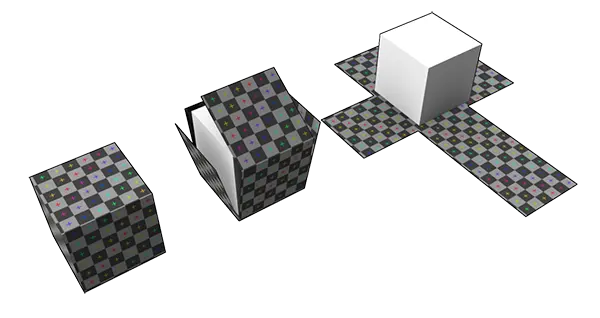
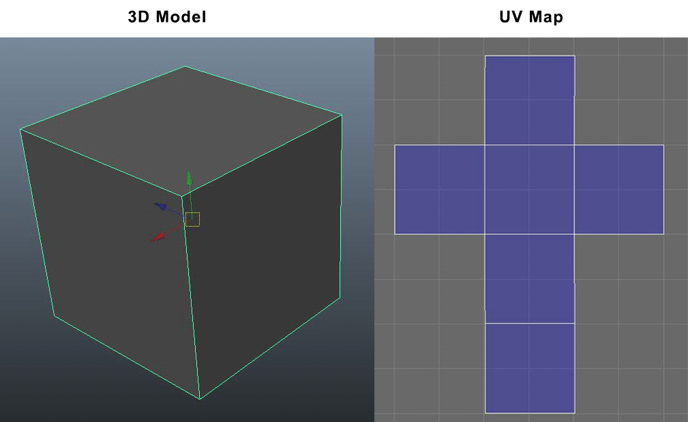
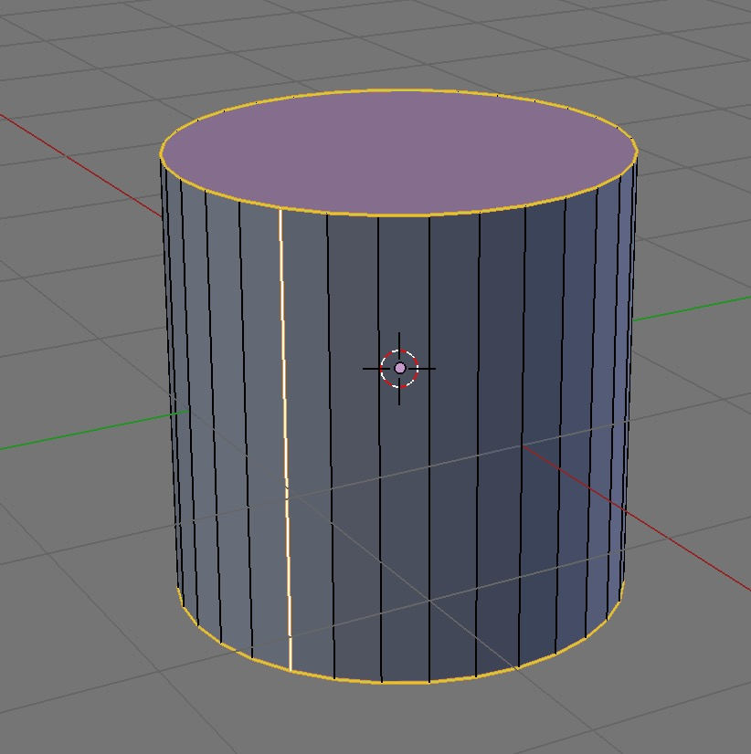
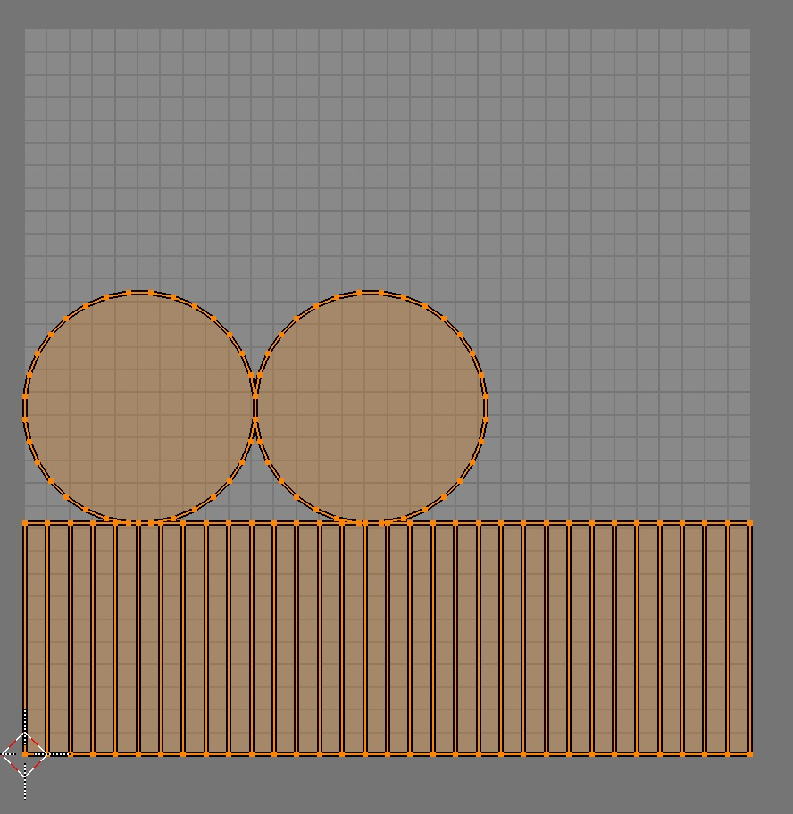
Ogni modello ha le sue UV e sono necessarie per applicare le texture correttamente. A volte è necessario disporre le UV anche in modi strategici per ottenere comportamenti adeguati su shader particolari (vedremo meglio cosa significa questo).
Il piano in cui vengono disposte le UV è detto UDIM, e ha le coordinate normalizzate (quindi con valori compresi tra 0 e 1). Di UDIM ce ne possono essere più di una, ma i game engine sono in grado di leggere solo la prima (1001).
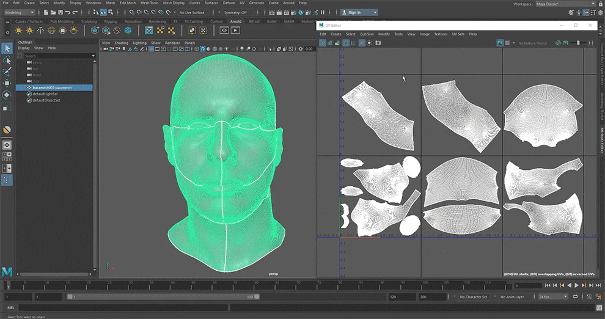
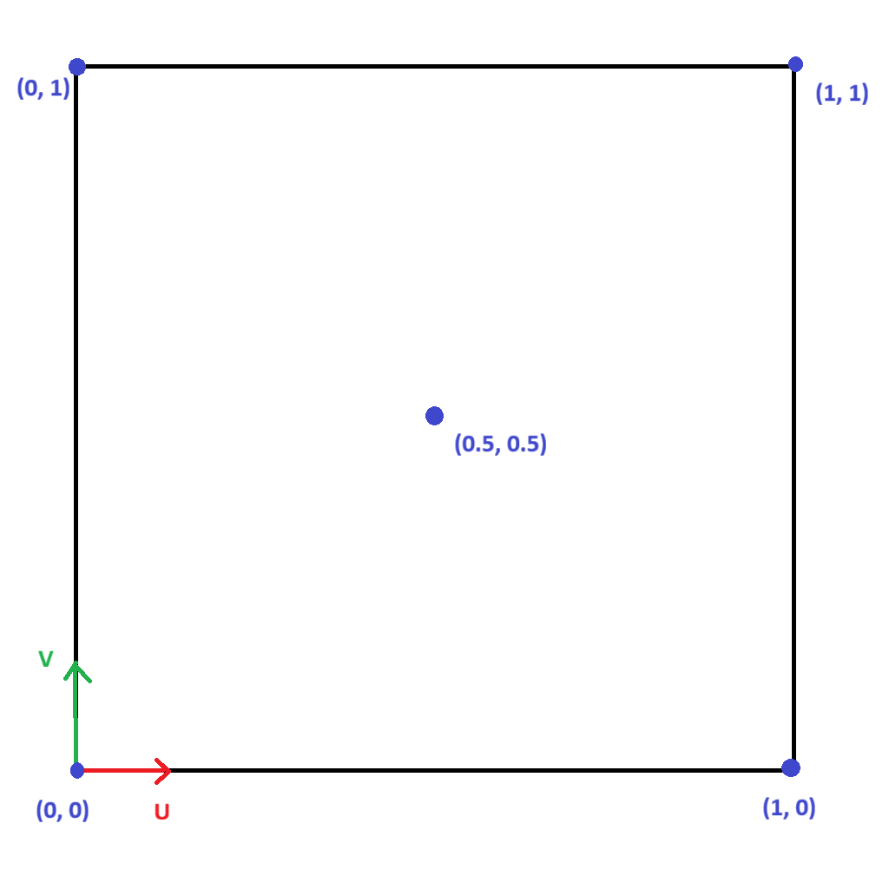
Tipologie di Texture
Le texture non servono soltanto a dare colore ai modelli 3D. Le texture fanno molto altro: possono descrivere come la luce interagisce con la superficie della mesh, simulare la presenza di piccoli rilievi o incavi, descrivere quanto una superficie riflette e/o disperde la luce, o ancora se è metallica o meno, e molto altro.
Tutte queste texture sono solitamente basate sulle stesse UV del modello 3D e la maggior parte si basa sul principio di pesature: dove la texture ha colore nero vale 0, mentre dove è bianca vale 1; tutte le scale di grigio sono valori compresi tra 0 e 1.
Prima di passare a vedere le texture nello specifico, capiamo come un'immagine, come appunto una texture, è formata e codificata.
Le immagini sono formate da pixel; ogni pixel contiene informazioni di colore all'interno di 3 canali diversi (RGB) e alcuni tipi permettono anche un canale aggiuntivo detto "alpha". In base al tipo di immagine, ogni canale viene codificato con un certo numero di bit (solitamente 8 o 16). Questi canali, presi singolarmente e poi mescolati insieme, formano il colore finale del pixel.
Prendiamo ad esempio una texture formata da 9 pixel (3x3) e scomponiamo i 3 canali (abbiamo così 3 volte la stessa texture; ogni canale è in scala di grigi):

È possibile quindi notare come il mix dei vari canali di un pixel formi il colore finale.
Base Color (Albedo)
Questa texture rappresenta il colore base/disegno da applicare al modello 3D. Non è quindi in scala di grigi, ma contiene colori derivanti dal mix dei 3 canali. A volte può contenere informazioni anche nel canale alpha, che viene utilizzato per la trasparenza oppure per salvare un'altra texture in scala di grigi (essendo un canale singolo, è possibile salvare immagini in scala di grigi perché ogni pixel ha un solo canale).
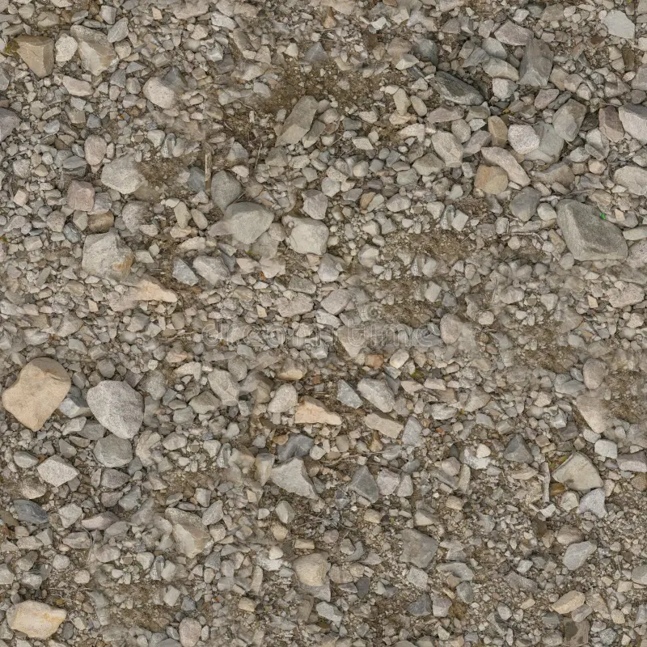

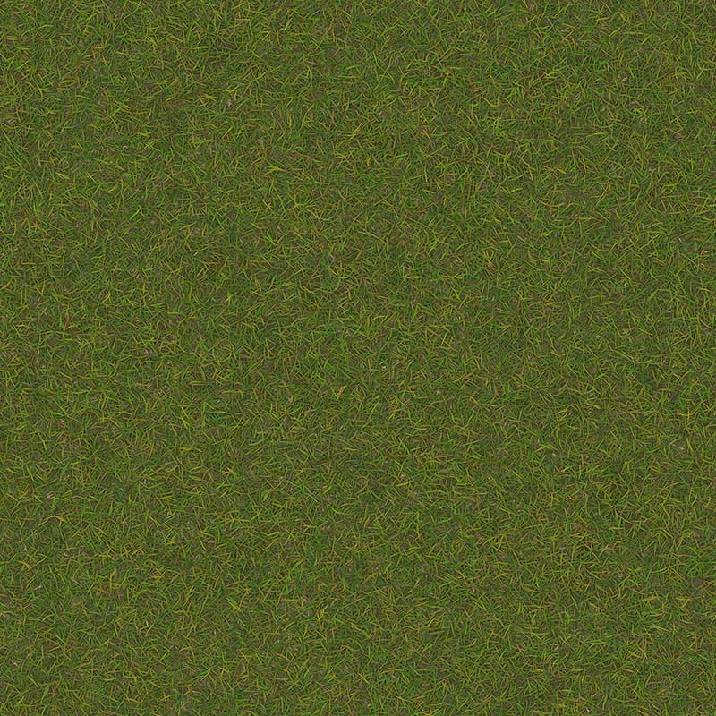
Roughness
Questa texture è in scala di grigi. I suoi pesi (da 0 a 1, cioè da 0 a 255 come informazione salvata nel singolo canale del pixel) indicano quanto una superficie è ruvida (1) o liscia (0). Le sfumature di grigio sono quelle che rendono correttamente il materiale.
Esiste anche la texture di Smoothness che lavora al contrario: è liscia a 1 ed è ruvida a 0. Si ottiene con un "One minus" (cioè: Smoothness = 1 - Roughness oppure Roughness = 1 - Smoothness).
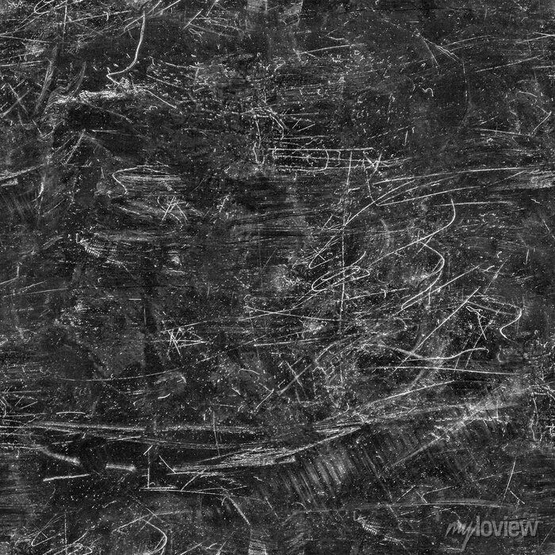
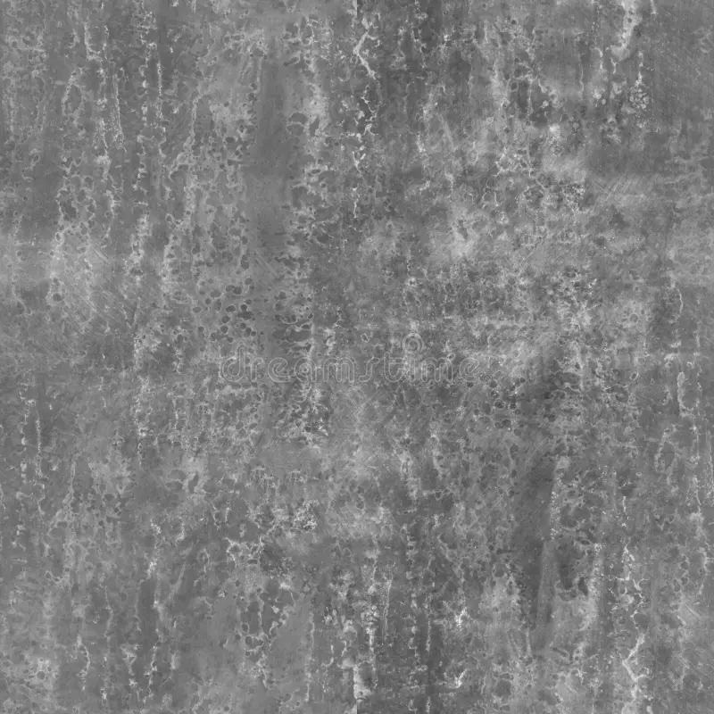
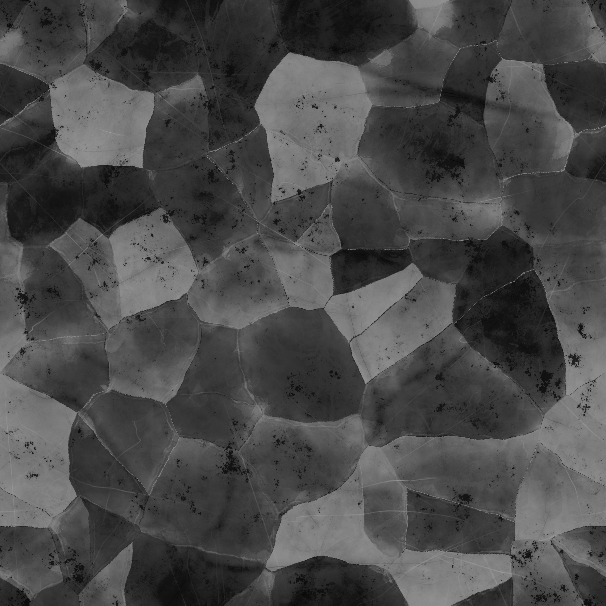
Metalness (Metallic)
Questa texture indica quanto una superficie è metallica (1) o non metallica (0). Normalmente, nel mondo reale, un materiale è metallico oppure no, non ci sono vie di mezzo; pertanto solitamente in questa texture non si usano le sfumature, anche se per rendere risultati particolari si può sfruttare la sfumatura di questa mappa (anche per superfici non realmente metalliche, ad esempio il vetro).
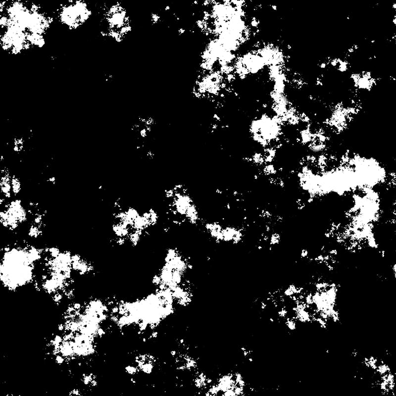
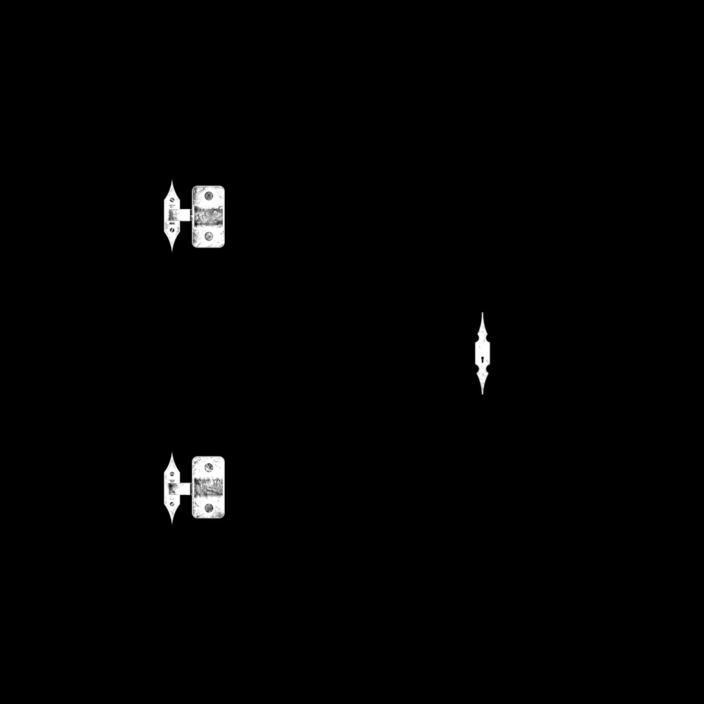
Normal Map
Questa texture è importantissima perché permette di simulare un rilievo o un incavo su una superficie senza dover aggiungere vertici e poligoni che impatterebbero sulle performance.
Per salvare le informazioni di come la superficie è inclinata, questa texture usa 3 canali (R, G, B). Ogni pixel contiene in questi 3 canali le 3 componenti X, Y, Z (rispettivamente in R, G, B) del vettore normale al poligono virtuale presente in quel punto (il vettore normale è un vettore perpendicolare alla superficie del poligono).
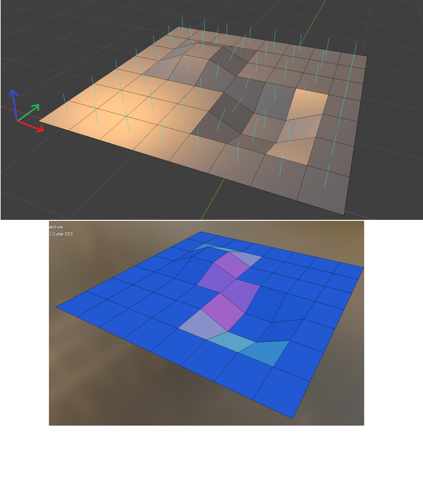
La normal map risultante di questa superficie è quindi la seguente:
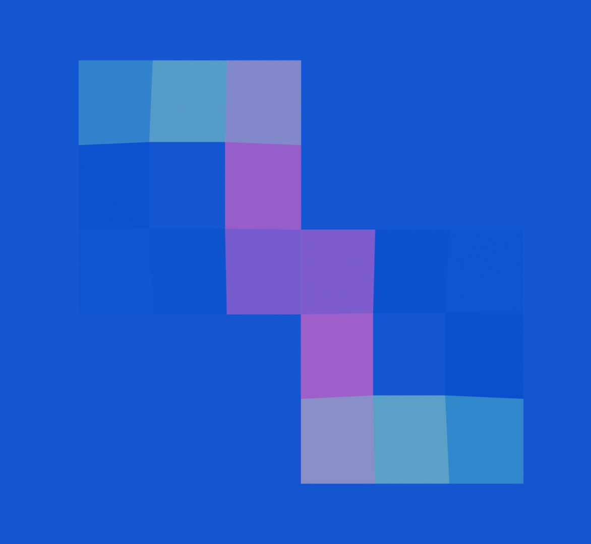
Esistono due tipi di normal map:
- Normal Map DirectX
- Normal Map OpenGL
Queste differiscono soltanto per come sono orientati gli assi e quindi il modo in cui vengono salvate le componenti del vettore. Si può tranquillamente passare da una all'altra invertendo le componenti nel modo corretto. Unreal Engine utilizza le normal map in DirectX, mentre Unity quelle in OpenGL.
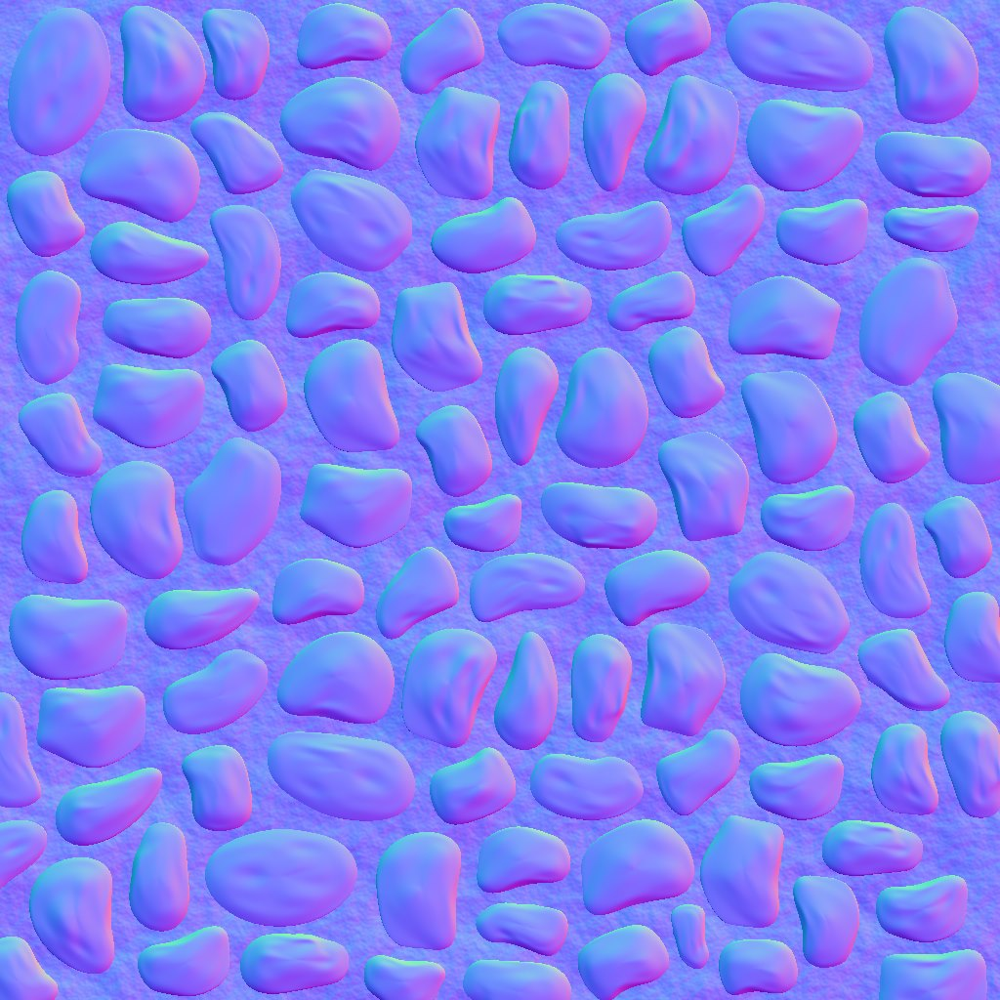
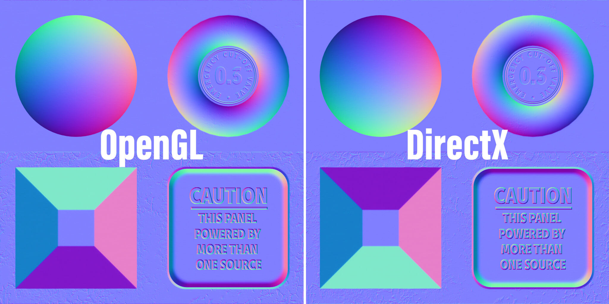
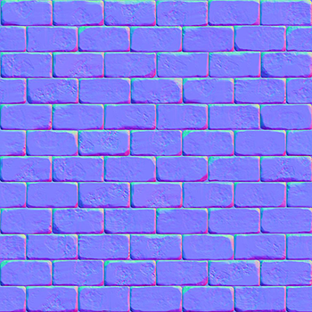
Esempio Pratico: Cubo 3D con Texture UV
Qui sotto puoi vedere un cubo 3D con la texture UV applicata. Usa il mouse per ruotare, zoomare e muovere la camera: